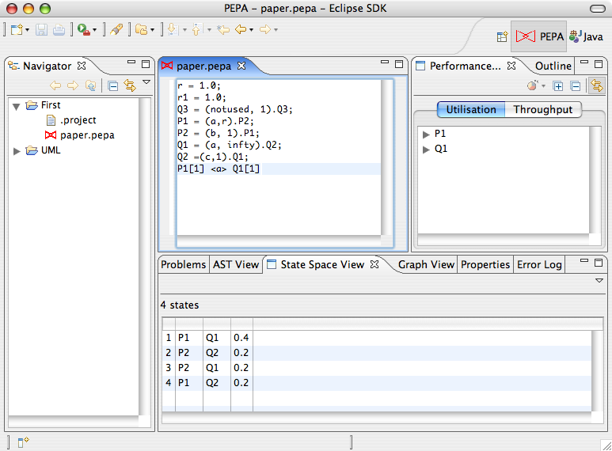
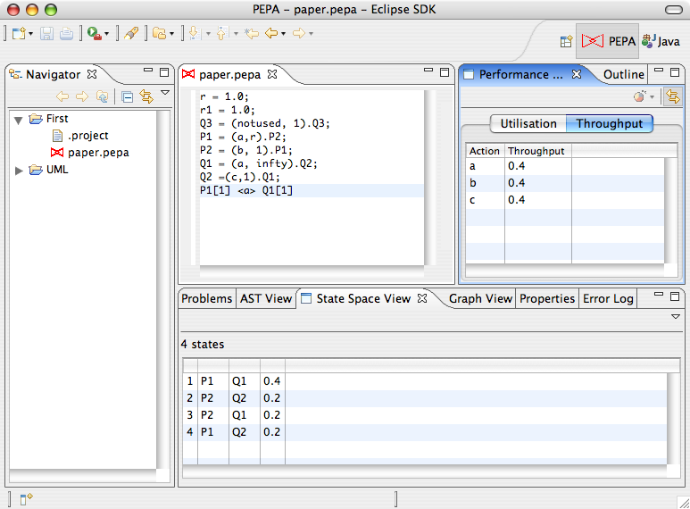

To obtain the steady-state probability distribution of the underlying Markov chain of a PEPA model, click PEPA > CTMC > Steady State Analysis. The item is not be enabled if the state space is not derived.

The wizard will guide you through the process of selecting a solver and setting its parameters. You can choose between a direct solver and a range of iterative solvers for which a number of preconditioners is available.
Once the model is solved, the State Space View will be updated with a column showing the steady-state probability of each column.
In addition, throughput and utilisation analysis will be carried out automatically and results will be available in the Performance Evaluation View.
